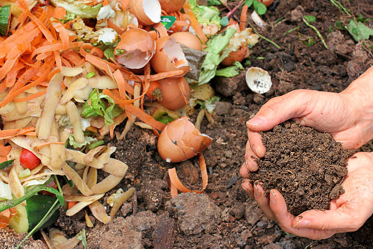
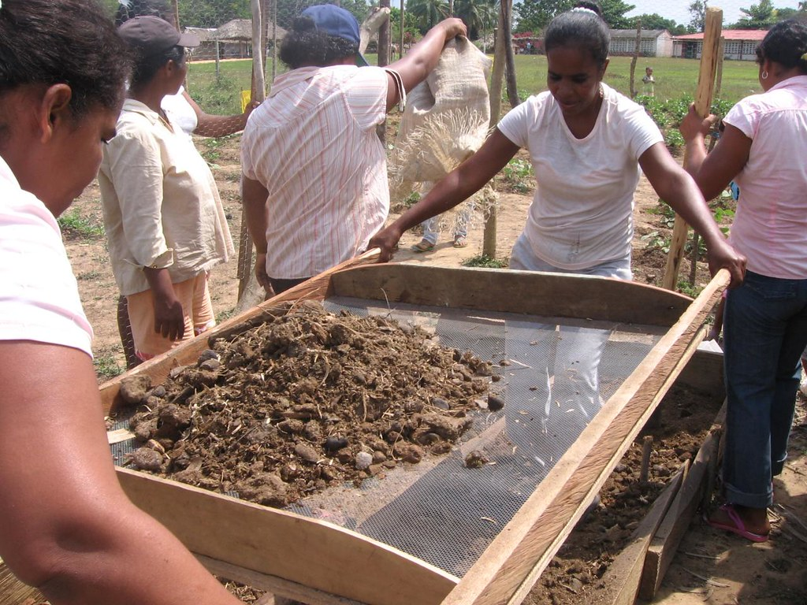
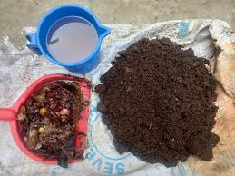
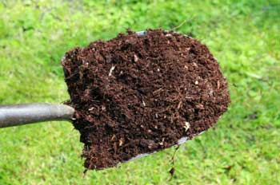
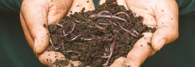

search
Make organic fertilozer at home
Step 1: Collect Organic Materials
Gather organic materials that can be used to make compost. This can include:
- Kitchen scraps (fruit and vegetable peels, coffee grounds, eggshells)
- Yard waste (grass clippings, leaves, small branches)
- Livestock manure (if available)
- Hay or straw

Step 2: Choose a Location for Composting
Select a suitable location for your compost pile. It should be:
- Well-drained
- Partially shaded to prevent excessive drying out
- Convenient for adding materials and turning the compost pile

Step 3: Build or Prepare a Compost Bin
You can use a variety of containers for composting,
including a dedicated compost bin, a pile enclosed with wire mesh,
or a simple heap on the ground.
Make sure it's large enough to accommodate the amount of organic material you have.

Step 4: Layer Organic Materials
Start by creating a bottom layer of coarse materials like
straw or small branches to promote airflow. Then,
alternate layers of green materials (nitrogen-rich) and brown materials (carbon-rich).
- - Green materials: Kitchen scraps, grass clippings, and manure
- - Brown materials: Dry leaves, straw, and shredded newspaper
Step 5: Maintain Moisture and Aeration
Keep the compost pile moist, like a wrung-out sponge.
Water it periodically, especially during dry periods.
Turn the compost pile every few weeks to aerate it and speed up decomposition.
This helps ensure that all materials decompose evenly.

Step 6: Monitor and Adjust
Monitor the compost pile regularly. It should heat up as decomposition occurs.
If it starts to smell bad or becomes too wet, add more brown materials
and turn the pile to improve airflow. If it's too dry, add water.
Step 7: Harvest Finished Compost
After several weeks to several months, depending on conditions and materials used,
the compost will be ready. It should be dark, crumbly, and have an earthy smell.
Use a screen or simply hand-pick larger debris to separate the finished compost from any remaining materials.

Step 8: Use Compost in Your Garden
Apply the finished compost to your garden beds or
around plants as a nutrient-rich soil amendment. It improves soil structure, adds beneficial microorganisms,
and provides essential nutrients for healthy plant growth.
.